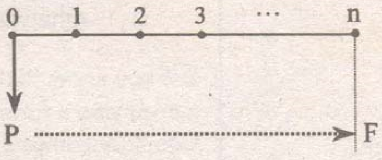
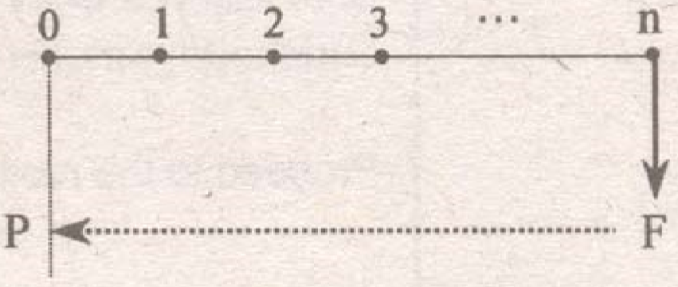

Economics is a science which deals with the attainment of the maximum fulfilment of society's unlimited for goods and service.
Engineering Economy is the branch of economics which deals with the application of economics laws and theories involving engineering and technical projects or equipments.
Consumer goods and services refer to the products or services that are directly used by people to satisfy their wants. Examples are food, clothing, shelter or home, etc.
Producer goods and services are those that are used to produce the consumer goods and services. Examples are buildings, machines, factories, etc.
Utility refers to the satisfaction or pleasure derived from the consumer goods and services. This also means the power to satisfy human wants and needs.
Luxury products are those products that have an income-elasticity of demand greater than one. This implies that as income increases, more income will be spent on these products. Examples are appliances, entertainment, vacations, etc.
Supply the amount of goods or products that are available for sale by the suppliers.
Demand the want or desire or need for a product using money to purchase it.
Law of supply and demand: "When free competition exists, the price of the product will be that value where supply is equal to the demand."
Competition is a form of market structure where the number of suppliers is used to determine the type of the market.
Perfect competition a market situation wherein a given product is supplied by a very large number of vendors and there is no restriction of any additional vendor from entering the market.
Market is the place where the vendors or the sellers and vendees or the buyers come together.
The following are the different market situations:
| Market situation | Sellers | Buyers |
|---|---|---|
| Perfect competition | many | many |
| Monopoly | one | many |
| Monopsony | many | one |
| Bilateral monopoly | one | one |
| Duopoly | two | many |
| Duopsony | many | two |
| Oligopoly | few | many |
| Oligopsony | many | few |
| Bilateral oligopoly | few | few |
Interest is the amount of money or payment for the use of a borrowed money or capital.
Simple interest (I) is defined as the interest on a loan or principal that is based only on the original amount of the loan or principal. This means that the interest charges grow in a linear function over a period of time. It can be calculated using the formula
$$I=Pin$$
where: P = principal, i = interest per period, n = number of interest period
Ordinary simple interest is base on one banker's year. One banker's year is equivalent to 12 months of 30 days each. Also, 1 banker's year = 360 days.
$$n=\frac{d}{360} \ \ \ \ \ I=Pi\frac{d}{360}$$
Exact simple interest is based on the exact number of days in a given year. An ordinary year has 365 days while a leap year (which occurs once every 4 years) has 366 days.
For ordinary or normal year $$n = \frac{d}{365}$$
For leap year $$n = \frac{d}{366}$$
Compound interest is defined as the interest of loan or principal which is based not only on the original amount of the loan or principal but the amount of the loan or principal plus the previous accumulated interest. This means that the interest charges grow exponentially over a period of time.
Compound interest is used frequently in commercial practices than simple interest.
Total amount, F
$$F=P(1+i)^{n}$$
where: P = principal, i = interest per period, n = number of periods
Present worth, P
$$P=\frac{F}{(1+i)^{n}}$$
Rate of interest is the cost of borrowing money. It also refers to the amount earned by a unit principal per unit time.
Nominal rate of interest is defined as the basic annual rate of interest while effective rate of interest is defined as the actual or the exact rate of interest earned on the principal during 1 year period.
For example: 5% compounded quarterly.
In this example, the nominal rate is 5% while the effective rate is greater than 5% because of the compounding that occurs four times during a year.
The effective rate of interest may be calculated using the following formula.
$$\text{ER}=(1+i)^{m}-1$$
where: m = number of interest periods per year
Discount refer to the difference between the future worth of a negotiable paper and its present worth. It also refers to the sale of stock or share at reduced price. Discount may refer to the deduction from the published price of services or goods.
$$\text{discount}=\text{future worth}-\text{present worth}$$
Determination of leap year:
To determine a year whether a leap year or not, just divide the year by 4. If exactly divisible by 4, then it is a leap year. However years ending with two zeros or century years (i.e. 1900, 1800, etc.) must be divided by 400 not 4. If the exactly divisible by 400 it is a leap year otherwise its not.